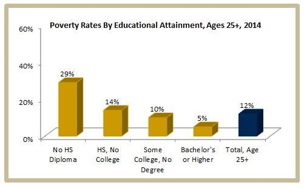

How They Are Related
A person’s level of education can weigh heavily on their future prospects and life opportunities. ConcernUSA states that education can "open the door to jobs, resources, and skills that a family needs to not just survive, but thrive.” To improve a family's financial status, education for their children is one of if not the most important pathway to success. According to UNESCO, if all adults completed secondary school, global poverty rates would be cut by more than half, yet many individuals in third-world countries are unable to attend secondary school and are forced to work low-paying jobs in order to survive. Thus, they are unable to afford to send their children to school because of their financial situation. The children would thus follow the footsteps of their parents, causing an intergenerational cycle of poverty which is extremely difficult to escape without the help of external opportunities like those provided by an education.
This is why opening free pathways for children to receive an education is so urgent, as they are the generation that can overcome the education and income inequality barriers to bring themselves as well as their families out of extreme poverty.